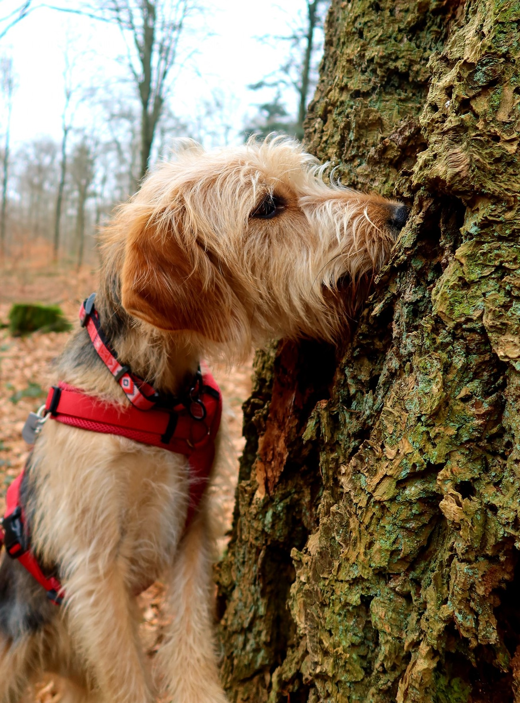
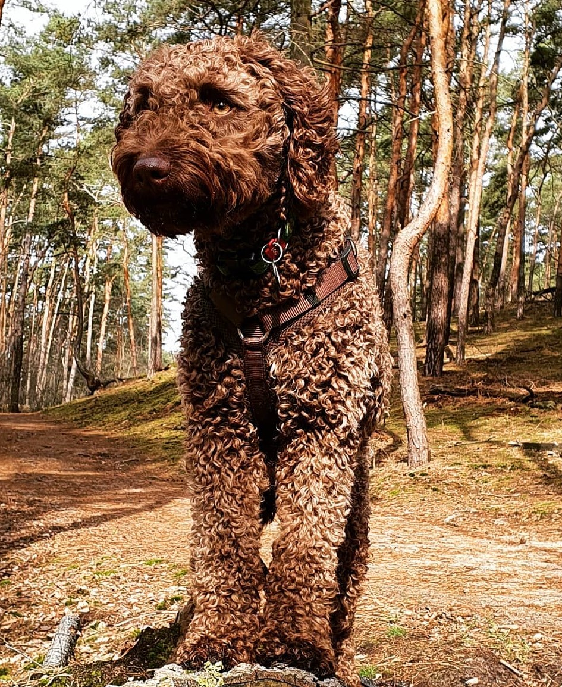

About Mitzi

Mitzi was born in Greece. As a 2 weeks old puppy, together with 4 of her
siblings, she was abandoned in a cardboard box in the forest.
Luckily some good soul found the box full of love and brought it to the
local shelter in Serres, Greece.
There she received her very
special name and very good care.
When I saw her on the adoption website, she was only a few months old
and it was love at first sight.
I knew that would be my dog and I wanted to bring her to Germany. With
my boyfriend we went through the adoption process and finally we could
meet our Mitzi in person.
She arrived to Germany in September 2019 as a 9 months old puppy. When
we brought her home everything was new to her, because all what she knew
until then was the shelter.
She was welcomed by our two cats and she started her brand new life in
Berlin. Ofcourse it was a big adjustment and for the first months we
were working on her fears and building her self confidence.
Mitzi was afraid of buildings, doors, traffic, bridges and even her own
shadow. It was a long journey that we went through with small steps and
big celebrations of her milestone achievements. Every time she would
cross the bridge or walk through the doors, she would be so happy,
it was very visible that she understood that she is overcoming her own
fears.
A few months ago, Mitzi welcomed a new house member and she realised
that now she is a big sister. So, she guided and protected little
Zlata,
she plays with her and teaches her dog manners. Next to her, Mitzi
became a self-confident dog that is great with other dogs and with
people.
Mitzi loves adventures, with curiosity she goes to new
places and enjoys nature.
Her favourite place is the nearby lake and her favourite game is to run
circles at full speed. She loves to cuddle on the couch and receive
treats.
With love, acceptance, patience and work we overcame Mitzi’s fears and
helped her to blossom as an amazing dog. She is the best companion and a
very reliable friend. She made it from the cardboard box in the forest
in Greece to a great life in Berlin.
Visit Website of the Hundegarten Serres
About Zlata

Zlata is a Spanish Water Dog.
She was born on the 6th of April
2020 in the Bona Espero FCI Poland with breeding name Zefirella. Her
parents are: mother - Onda Bona Espero FCI and father - Castano Wavelet.
She became a part of the family when came to Berlin at the end of
June as a 3 months old puppy.
From day 1 she became very attached
to Mitzi and treated her as her guardian and protector. Since the moment
Zlata met Mitzi, they liked to sleep together in one bed, snuggle and
play.
Zlata was a very calm puppy, she was not destructive and
very obedient. We put lots of time and efforts into her socialisation,
making sure that every other day she is getting to know new situations
and she can cope with them.
Ofcourse, once she entered puberty
phase, she became a bit more noty, mainly she started to bark a lot and
she started to have troubles with emotion control. Barking is something
very normal for SWD breed and we treated this not in the category of
the"issue", but more like an opportunity to train her impulse control.
Consistency and positive reinforcement training helped to manage
emotions of little Zlata.
Now she is 1 year old, very obedient, calm and just a perfect dog. She
loves Mitzi, her best friend, lagotto Baci and two of our cats, that she
is very desperate to make friends with.
Visit the Website of Bona Espero FCI
Favourites
Gear,
toys,
food and snacks